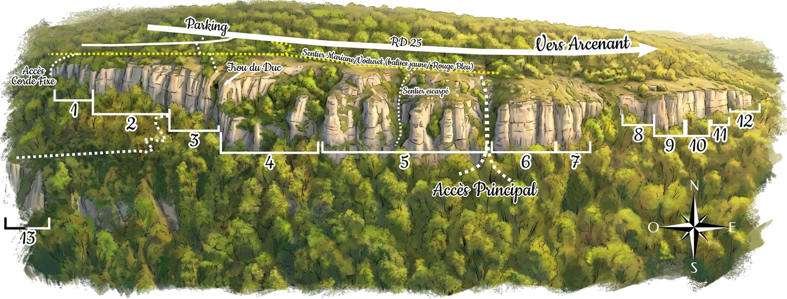
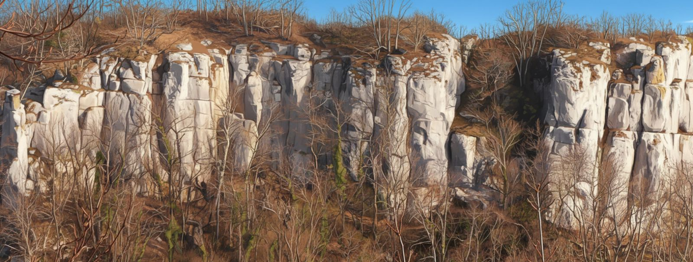
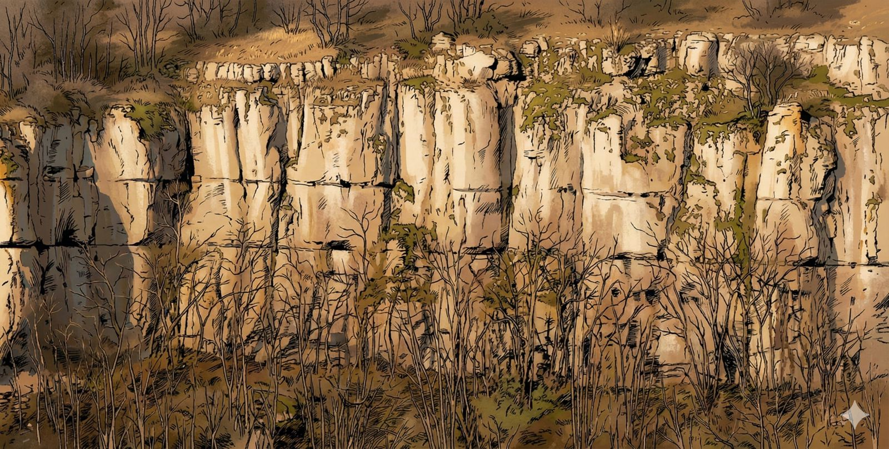
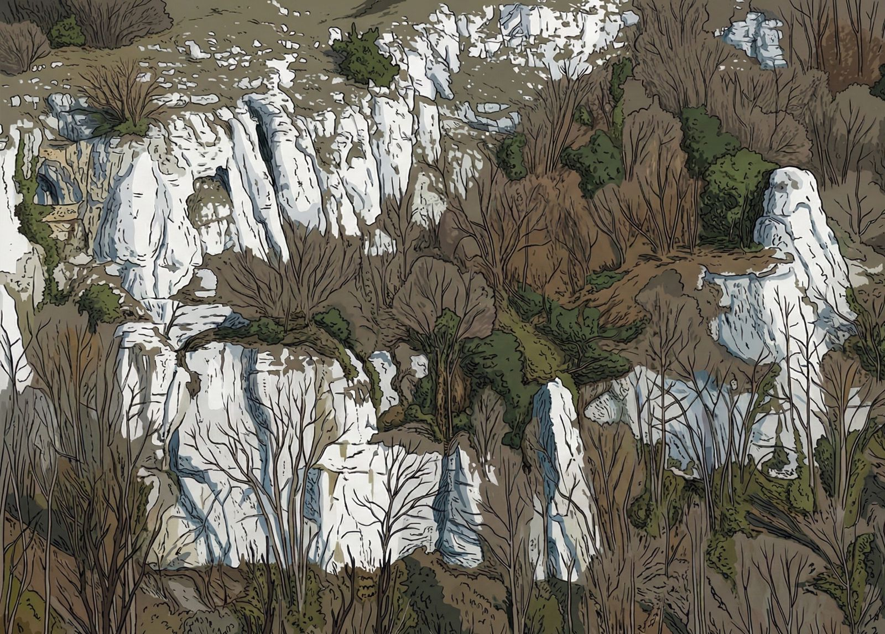
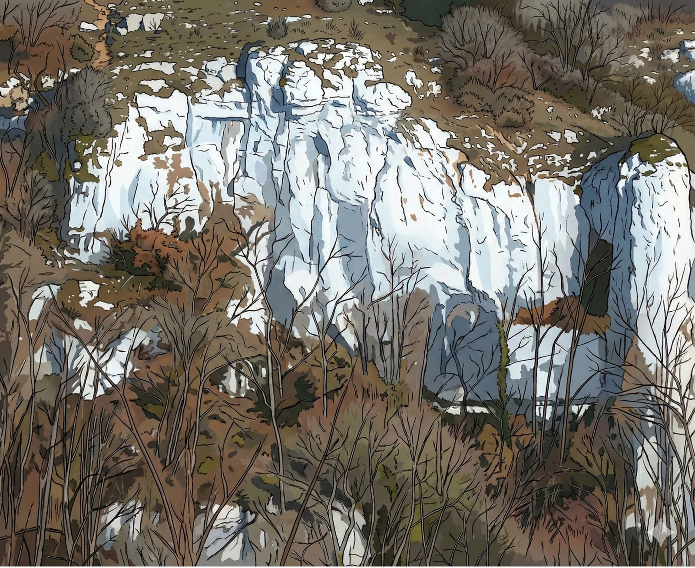
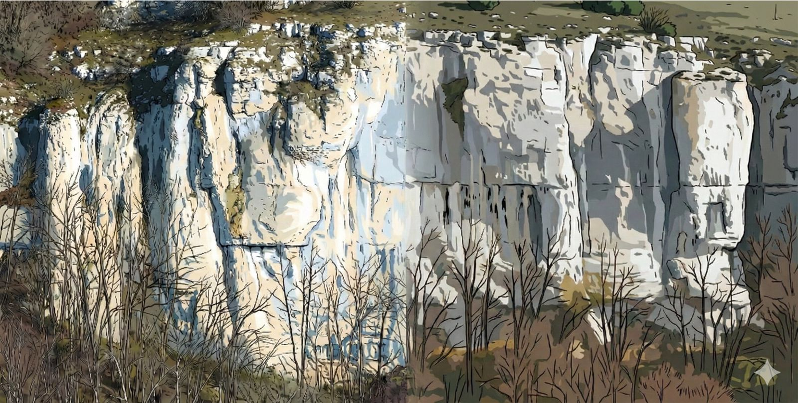
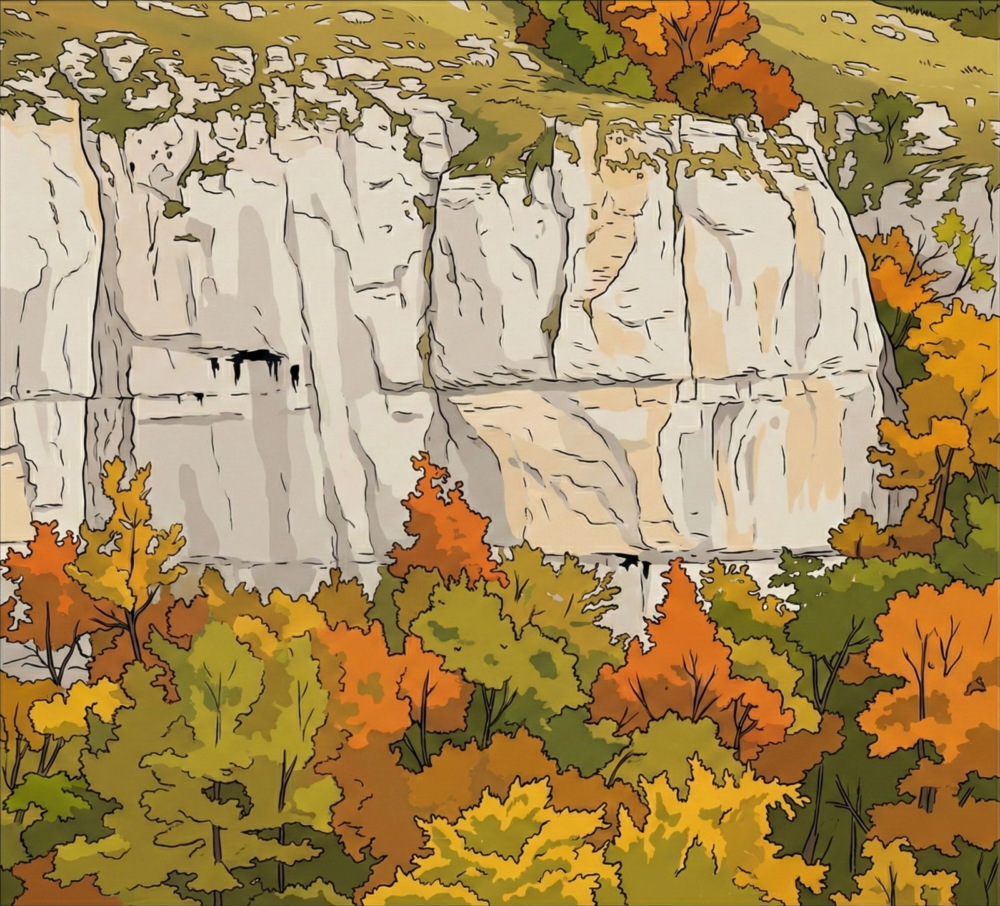

Arcenant
À lire

Secteurs
-

Début de l'histoire4 – 8 -

Génération Edlinger4 – 7 -
 Trou du Duc5 – 7
Trou du Duc5 – 7
-

Tout nouveau tout beau5 – 6 -
 Les quatres piliers de la sagesse5 – 7
Les quatres piliers de la sagesse5 – 7
-
 Hors taxe5 – 7
Hors taxe5 – 7
-
 La petite verte4 – 8
La petite verte4 – 8
-

Mur Bowie3 – 7 -
 Coups de soleil4 – 7
Coups de soleil4 – 7
-

Coupe franche7 – 8 -

Francofolies6 – 7 Attention -
 Ultime atome5 – 7
Attention
Ultime atome5 – 7
Attention
-
 Frigo6 – 8
Frigo6 – 8